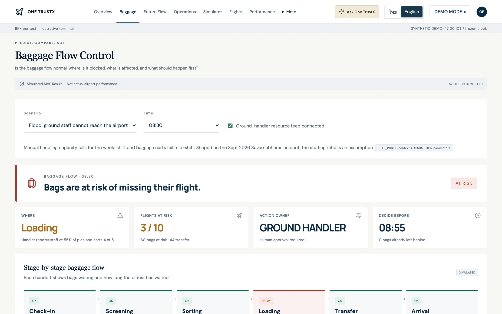

เมื่อเกิดเหตุผิดปกติ สัญญาณของกระเป๋า เที่ยวบิน และกำลังคนอยู่คนละระบบ คนละฝ่าย จึงรู้ช้าว่าติดที่ไหน กระทบอะไร และควรทำอะไรต่อ
วันที่ 29 ก.ย. CEO การบินไทยแจ้งว่าเหลือราว ~5,000 ใบ วันที่ 30 ก.ย. ยังค้างราว ~8,000 ใบ ใช้กำลังทหาร 131 นาย งดรับ cargo 30 ก.ย.–6 ต.ค. และลดเที่ยวบิน
SKY ระบุเองว่ากระเป๋ามักมีปัญหาตอนเปลี่ยนความรับผิดชอบ และ SITA พบว่า 39% ของกรณีผิดพลาดเกิดที่ขั้นต่อเครื่อง ซึ่งเกี่ยวข้องหลายฝ่ายและมีเวลาจำกัด
รวมสัญญาณกระเป๋า เที่ยวบิน กำลังคน และเหตุผิดปกติ เพื่อตรวจจับคอขวดให้เร็ว ประเมินผลกระทบ และแนะนำลำดับการกู้สถานการณ์ โดยเจ้าหน้าที่เป็นผู้ตัดสินใจ
| ระบบ | ตอบคำถามอะไร | One TrustX เพิ่มอะไร |
|---|---|---|
| BRS / BHS | กระเป๋าใบนี้อยู่ที่ไหน ขึ้นเครื่องถูกลำหรือไม่ แจ้งเตือนกระเป๋า no-show และลงผิดตู้ | ดูการไหลรายขั้นเทียบเวลาออกของเที่ยวบิน บอกว่าติดที่ไหนและเที่ยวบินใดเสี่ยง |
| AODB | เที่ยวบินออกและถึงกี่โมง gate ไหน | ใช้เป็นเส้นตายในการจัดลำดับ ไม่ซ้ำกับ AODB |
| A-CDM | ทุกฝ่ายทำงานตาม milestone ของเที่ยวบิน | ไม่สร้างใหม่ ส่งความเสี่ยงด้านกระเป๋ารายเที่ยวบินเป็นอีกหนึ่ง input |
| ฝ่ายภาคพื้น | รู้กำลังคนของตัวเอง แต่ไม่เห็นภาพกระเป๋าทั้งเส้น | ได้ลำดับเที่ยวบินที่ควรทำก่อน เมื่อคนไม่พอ |
| BRS / BHS | จำนวนสแกนรวมรายขั้น รายเที่ยวบิน | จำเป็น |
| AODB | เวลาออก เวลาจอด gate | จำเป็น |
| DCS / BRS | จำนวนกระเป๋าที่คาดไว้ และเที่ยวบินต่อ | จำเป็น |
| Ground handler | พนักงานเทียบแผน รถขนกระเป๋า | สาเหตุ |
| BHS | สถานะสายพานและเครื่องคัดแยก | สาเหตุ |
ต้องยืนยันกับ SKY: BRS ส่งออกเวลาสแกนรายขั้นเป็นจำนวนรวมได้หรือไม่
